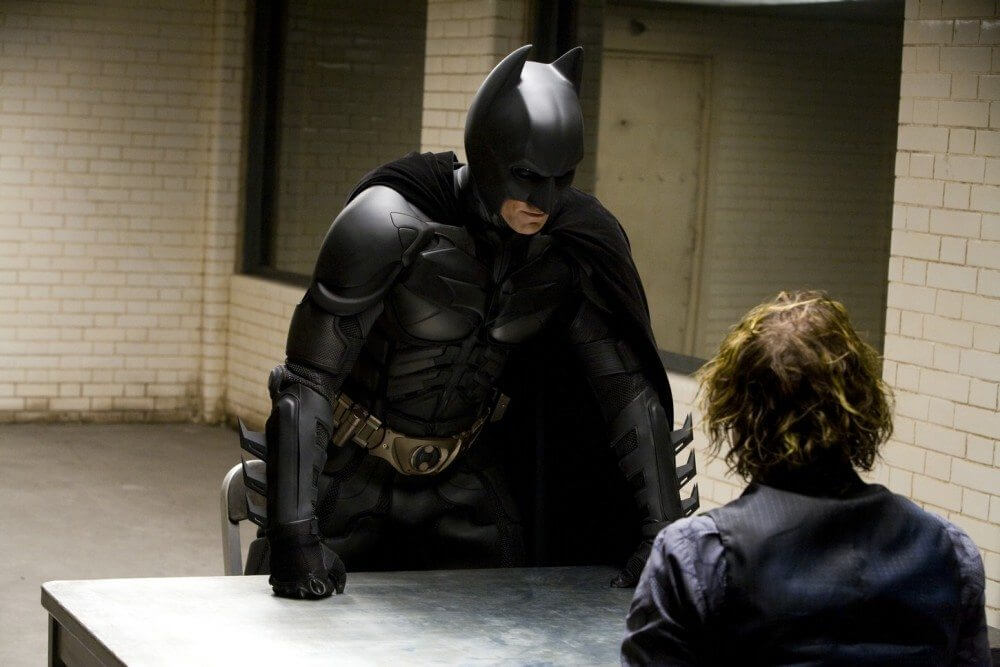

Dossiê Tático: O Cavaleiro das Trevas (2005-2012)
Atuação de Referência: Christian Bale

Perfil Psicológico Operacional e Equipamentos
Militarista, hiper-realista e treinado por ninjas. Utiliza exclusivamente tecnologia adaptada do setor de Defesa da Wayne Enterprises. Trata a sua missão como uma operação militar de guerrilha urbana. Usa uma voz artificialmente rouca para ocultar a sua identidade e baseia a sua tática na teatralidade e no engano.
Integridade atual das Placas de Kevlar: 85%.
O Tumbler (Batmóvel): Status Operacional. Pintura de Camuflagem Florestal / Preto Fosco Absorvente de Luz.
Item mais utilizado no cinto de utilidades: "Batarangue de Alta Velocidade"
> Ameaças Nível Terrorismo Urbano (Trilogia Nolan - Christian Bale)
- Ra's al Ghul: Líder da Liga das Sombras focado em purificar Gotham através do medo e destruição em massa.
- Coringa: Agente do caos completo, terrorista anarquista sem identidade registada ou impressões digitais.
- Bane: Mercenário excomungado focado em quebrar Gotham (e a coluna do vigilante) física e financeiramente.
"Não é quem eu sou por dentro, mas o que eu faço que me define."
Bruce Wayne, Relatório de Campo